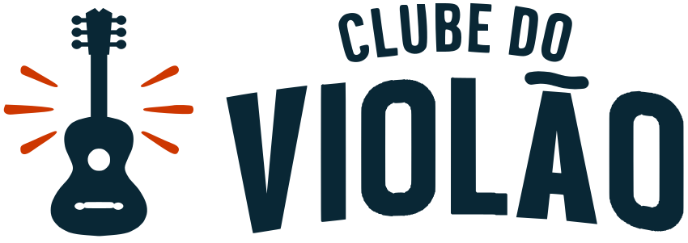

Marca dos Clubes · outubro de 2026
Uma casa, vários Clubes
Plano de arquitetura de marca para o Clube do Ukulele, o Clube do Violão, os Clubes que vierem depois e a marca-mãe que um dia vai assinar todos eles.
Cada instrumento vira um Clube com nome, silhueta e cor próprios, todos dentro do mesmo escudo com asas, com a mesma tipografia e as mesmas cores de função. A marca-mãe, quando nascer, assina embaixo e fica com o que é da casa: as asas laranja e o coral. A cor de cada Clube sai de uma lista de quatro vagas, na faixa da roda de cores que ainda não tem emprego. No feed, a pessoa reconhece o Clube pelo nome e pela silhueta do instrumento. A cor ajuda a separar, mas pelas medições ela sozinha não basta.
O que as grandes marcas fazem
Separei os casos em três grupos: os que funcionam, os que deram errado e voltaram atrás, e os brasileiros ou de educação, que são os mais próximos da gente.
Funcionam
Transporte · Londres
TfL e o roundel
O círculo com a barra do nome é igual em todos os modos de transporte. Muda só a cor: metrô vermelho e azul, Overground laranja, bonde verde, Elizabeth roxa. São 8 versões oficiais.
- Fixo
- A forma e a barra com o nome.
- Varia
- A cor por modo.
- Para nós
- O escudo com asas faz o papel do roundel: a forma é igual em todos os Clubes e só a cor de dentro muda.
Software
Microsoft 365
Word azul, Excel verde, PowerPoint laranja. Todos com as mesmas dobras, curvas e gradiente. A placa com a letra (W, X, P) continuou depois de debate interno, porque é ela que identifica o app quando a cor não basta.
- Para nós
- A cor do Clube funciona, desde que exista um identificador que não depende dela. O nosso é o nome do instrumento e a silhueta dele.
Software · 20+ produtos
Adobe Creative Cloud
Quadrado de cantos arredondados com sigla de duas letras (Ps, Ai, Pr). A cor é da categoria (vídeo, fotografia), não do app. Com dezenas de produtos, a cor se repete e quem identifica é a sigla.
- Para nós
- Com poucos Clubes, a cor identifica. Se um dia passarem de quatro ou cinco, a cor passa a agrupar Clubes parecidos e só o nome diferencia um do outro.
Escolas de instrumento
Simply (ex-JoyTunes)
Um app por instrumento, todos com o mesmo prefixo: Simply Piano, Simply Guitar, Simply Sing. Fender Play e Yousician fazem o contrário: um app só, e o aluno escolhe o instrumento na entrada.
- Para nós
- "Clube do X" é o nosso "Simply X". Com o prefixo fixo, todo Clube novo já tem o nome resolvido, sem depender de cor.
Hotelaria · marca endossada
Marriott
São 30 marcas. As de faixa média levam "by Marriott" (Courtyard, Fairfield), cada uma com identidade própria; a Marriott só dá a garantia. A Lippincott organizou o portfólio partindo da ideia de que ninguém compara mais de 7 itens de uma vez.
- Para nós
- É o modelo que escolhemos para a marca-mãe: assina embaixo, não aparece na frente.
Deram errado e voltaram atrás
Logística
FedEx: cor demais
O "Fed" roxo era fixo e o "Ex" mudava por divisão: Express laranja, Ground verde, Freight vermelho, Office azul, Trade Networks amarelo. Em 2016 a empresa anunciou a volta de todas as divisões para o roxo com laranja. Hoje quem diferencia é só o nome da divisão.
- Para nós
- A cor da casa (o coral e as asas) não se distribui entre os Clubes, e o número de cores tem teto.
Software
Google Workspace: igual demais
Em 2020 todo ícone passou a levar as 4 cores do Google. Em tamanho pequeno ficaram indistinguíveis, e gente abria o Docs achando que era o Calendar. Em junho de 2026 o Google trocou os 13 ícones por versões com uma ou duas cores dominantes.
- Para nós
- Se todo Clube usar a paleta inteira da casa, os Clubes ficam iguais entre si. Cada um precisa de uma cor principal só dele.
Educação
Duolingo Math
Saiu como app separado em 2022 e foi incorporado ao app principal no fim de 2023. Hoje Música e Matemática ficam dentro do Duolingo, e o ícone separado não sobreviveu.
- Para nós
- Quando o público e o caminho de estudo são os mesmos, a submarca tende a virar trilha dentro da casa. Vale observar se o mesmo aluno compra vários Clubes: se comprar, a marca-mãe ganha peso.
Brasil e educação
Banco · 2023
Itaú
No redesenho de 2023 (Pentagram com Fabio Haag), o símbolo, a tipografia e a iconografia ficaram iguais em todos os segmentos, "por eficiência e reconhecimento". Muda a cor: Uniclass e Personnalité em tons de azul, BBA e Private em tons escuros.
- Para nós
- É o caso mais parecido com o plano: um eixo varia (a cor de estrutura), o resto trava.
Cosméticos · endossada
Natura: Ekos, Tododia
"Ekos, da Natura." Cada linha tem logo, embalagem, fotografia, agência e até rosto próprio (a Iza na Tododia). A Natura só endossa. Quando uma linha cresce, ela estica a mesma submarca em vez de criar outra.
- Para nós
- O endosso funciona quando cada filho tem território claro. No nosso caso o território é o instrumento, e o professor de cada Clube pode ser o rosto dele.
Educação · 2025
Grupo Alun (Alura, FIAP)
Em 2025 a Alura, a FIAP, a PM3 e outras unidades passaram a ficar sob a marca-mãe Alun. A mãe aparece no institucional, para investidor e RH. O aluno continua vendo Alura ou FIAP.
- Para nós
- O aluno não vê a marca-mãe, e ela não precisa ser criada antes de ter um uso.
Mídia · 2021
Globo: "Uma Só Globo"
A esfera, a tipografia própria e uma paleta de 8 cores, mais um grid tirado das proporções da esfera para montar logos, assinaturas e taglines. Com o grid, uma marca nova sai do mesmo molde.
- Para nós
- O escudo do violão é o nosso gabarito. Se ele ficar bem resolvido, o da guitarra e o do baixo saem dele.
Música · o polo oposto
Cifra Club Academy
Mais de 15 cursos (violão, guitarra, baixo, teclado, ukulele, canto) dentro de um app com uma marca só. O instrumento é só um item do catálogo, então lançar um curso novo não exige marca nova.
- Para nós
- Sai barato, mas o aluno de ukulele deixaria de ter um Clube só dele, e é isso que o plano quer manter.
Idiomas · 2021
Fluency Academy
A agência taste criou em 2021 logo, tipografia exclusiva e "submarcas de cada idioma". No site de hoje, inglês, japonês e espanhol usam o mesmo logo e a mesma paleta; cada idioma é marcado só pela bandeira e por "Curso de X". Na prática, a Fluency ficou mais perto do Cifra Club do que de um sistema de submarcas.
- Para nós
- As submarcas da Fluency ficaram no manual e não chegaram ao site. Por isso o checklist exige que o Clube exista de fato: perfil, escudo e card no feed.
Os princípios que valem para nós
- A forma fica presa, a cor varia dentro dela.O escudo com asas, o lettering e o layout são iguais em todos os Clubes. (TfL, Microsoft)
- Todo Clube tem um identificador que não depende de cor.O nome do instrumento no escudo e a silhueta dele embaixo. Só com a cor, dois Clubes de fundo escuro podem se confundir no feed; com o nome escrito no escudo, não. (Microsoft, Adobe)
- O nome tem prefixo fixo."Clube do Ukulele", "Clube do Violão", "Clube da Guitarra". Nada de nome criativo por instrumento. (Simply, Marriott)
- A cor da casa nunca vira cor de Clube.Coral e asas laranja aparecem iguais em todos, e é por eles que o aluno vê que os Clubes são da mesma escola. (FedEx)
- Cor de função fica fora da roda dos Clubes.Teal de compra, teal de download, laranja de oferta, verde de conclusão e vermelho de erro têm o mesmo emprego em qualquer Clube. Um aluno que passa do ukulele para o violão não reaprende o que é o botão de compra.
- Cada Clube tem uma cor principal só dele.Nada de cada Clube usar a paleta inteira da casa. (Google Workspace)
- O segundo escudo vira gabarito.O Clube do Violão é desenhado como molde: escudo, nome no mesmo lettering, silhueta do instrumento, três tons. O próximo Clube sai dele sem reinventar nada. (Globo)
- O Clube novo herda o jeito de ensinar da casa.O mesmo método, a mesma área de membros, as mesmas análises e os mesmos rituais. Um Clube com método e área próprios não aproveita nada do que já funciona no ukulele. (Duolingo)
- A cor tem teto.Quatro vagas. Se um dia vier o quinto Clube, a cor passa a agrupar Clubes parecidos e só o nome diferencia um do outro. (Adobe, Marriott)
A arquitetura
São três níveis: o Clube vende, a marca-mãe dá a garantia e os produtos ficam dentro de cada Clube.
endossa
cada Clube tem seus produtos
Cada Clube tem perfil próprio no Instagram. Quando for o caso, também tem professor próprio. A marca-mãe não precisa de perfil de rede social enquanto não vender nada sozinha.
O que é da casa e o que é do Clube
Da casa (igual em todos)
- O escudo com asas e o lettering do nome
- As asas laranja
- O coral como assinatura: barra, destaque, sublinhado
- Anton nos títulos, Montserrat no corpo, JetBrains Mono nos acordes
- Fundo claro
#F5F4F7e texto#1F1A2B - Botões, tags, cartões e grade das páginas
- Tom de voz, acessibilidade (4,5:1, corpo de 16 px, toque de 44 px)
Do Clube (muda)
- O nome do instrumento no escudo
- A silhueta do instrumento no escudo
- A cor do Clube, em três tons: profundo (fundo escuro), médio (título, botão primário, link) e claro (contorno interno do escudo)
- As fotos: o instrumento e o rosto do professor
- O perfil de rede social
De função (nunca vira cor de Clube)
- Teal
#12A18A: botão de compra - Teal
#177A6A: download e material - Laranja
#CD3701: oferta (e as asas) - Verde
#25845A: conclusão - Vermelho
#B83A2E: erro de sistema - Âmbar e vinho: tags de dificuldade
A roda de cores
A paleta de função já ocupa os tons quentes e os verdes. O que sobra para os Clubes é a faixa fria, do azul-petróleo ao roxo, mais o grafite, que não tem matiz e por isso não briga com nada.
Medi a distância entre os fundos escuros dos Clubes: fica entre 0,05 e 0,10 na escala OKLab. O manual do ukulele considera 0,047 perto demais. Ou seja, os fundos se separam, mas por pouco. Por isso o que mais diferencia um Clube do outro é o nome e a silhueta do instrumento.
Os quatro Clubes
A logo do Clube do Violão, com todas as versões, está na aba Clube do Violão.
Cada cor foi escolhida para passar nos mesmos testes do ukulele: coral legível sobre o fundo escuro, texto do botão de compra legível sobre o teal e título legível sobre o fundo claro. Os números abaixo são medidos (WCAG, mínimo 4,5).
A marca-mãe
O nome fica para depois. O plano só define o papel dela, para que o nome, quando vier, já tenha onde encaixar.
Onde ela aparece: rodapé das páginas, checkout, e-mail institucional, área de membros (se um dia for uma só para todos os Clubes), contrato e nota fiscal. Nunca no anúncio nem no perfil de rede social de um Clube.
O que ela herda: o que é da casa. As asas laranja e o coral. Uma direção para a logo dela é usar as asas sem o escudo, com o nome ao lado: as asas são da casa, o escudo é de cada Clube.
O que ela não pega: a cor de nenhum Clube. O índigo é do ukulele. Se a marca-mãe for índigo, o público associa a casa inteira ao ukulele, e os outros Clubes parecem menos importantes.
Em que fundo: sempre claro. Fundo escuro é sempre de um Clube, assim ninguém confunde uma página institucional com o Clube da Guitarra.

Rodapé só com o ClubeComo não virar bagunça
Um manual da casa e uma ficha de uma página por Clube. O manual diz tudo que é igual; a ficha diz só o que muda. Nas páginas, isso vira dois arquivos de cor: casa.css, com tudo que é fixo, e clube-violao.css, com os três tons do Clube nas mesmas variáveis (--clube-profundo, --clube-medio, --clube-claro). Trocar de Clube é trocar um arquivo.
Para abrir um Clube novo
- A cor está numa vaga livre e a pelo menos 25° do teal de compra.
- O coral passa em 4,5:1 sobre o tom profundo, e o tom profundo passa em 4,5:1 como texto do botão de compra.
- O tom médio passa em 4,5:1 sobre o fundo claro, e o branco passa em 4,5:1 sobre ele.
- Teste de feed: o card do Clube novo ao lado dos outros, a 170 px de largura, e dá para saber qual é qual antes de ler.
- A silhueta do instrumento é reconhecível com o escudo no tamanho mínimo (96 px).
- O escudo foi montado das peças oficiais, com o lettering desenhado no mesmo traço. Nada de fonte parecida.
- A ficha do Clube foi escrita e os tokens foram para o arquivo do Clube.
Próximos passos
- Agora: revisar a logo e o manual do Clube do Violão, na aba ao lado. A cor travada é o petróleo azulado, o que fica mais longe do teal de compra e deixa espaço para o azul-marinho do baixo.
- Depois: separar o manual do Ukulele em manual da casa e ficha do Ukulele, para que cada Clube novo só precise da própria ficha.
- Só quando existirem: Guitarra e Baixo. As vagas ficam reservadas, mas a cor final de cada um passa pelo checklist acima.